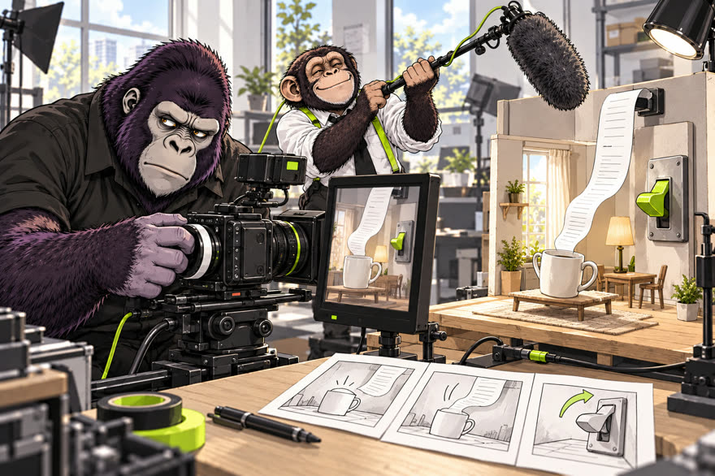
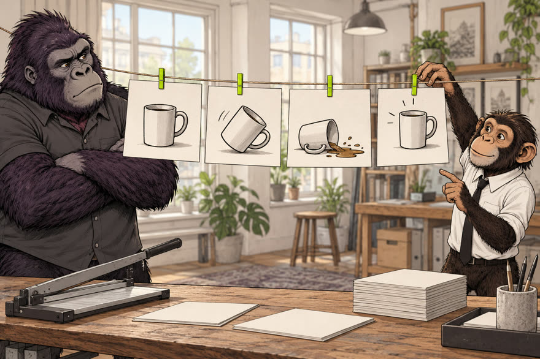
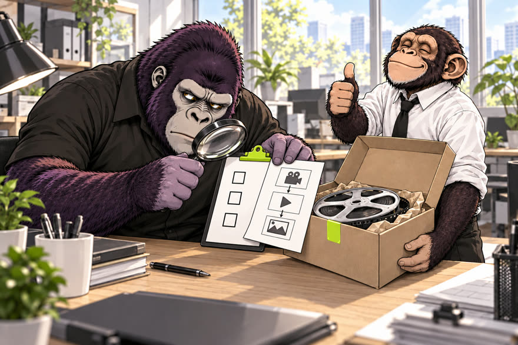
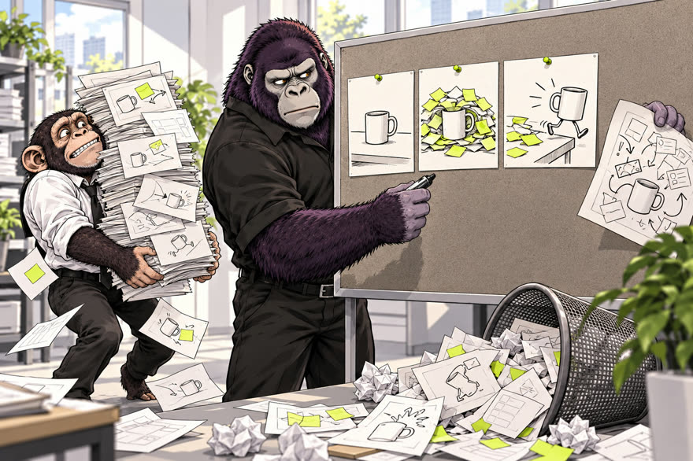

Двенадцать зрителей судят твой рилс
В ролике Горо собрал двенадцать Клодов-зрителей, и они подняли таблички с секундой, на которой пролистали. Это скилл /jury-reels для Claude Code. Школьница, мама, сеньор, скептик, бабушка и ещё семь зрителей читают ваш сценарий каждый отдельно и не видят ответов друг друга. Итог: «досмотрели N из 12» и одна правка, которая вернёт больше всего зрителей. Код писать не нужно: ниже четыре сообщения агенту.
- бесплатно
- Claude Code
- 12 независимых зрителей
- симуляция, а не реальные люди
К ролику «Суд над рилсом» · обновлено 10 ноября 2026
Как это устроено
Вы даёте сценарий и решаете, что править. Судят двенадцать отдельных вызовов модели.
- выСценарийчто видно и что звучит
- агентТаблица по секундамбез таймкодов секунду не назвать
- 12 зрителейКаждый судит отдельносекунда, причина, правка
- агентИтогдосмотрели N из 12
- выОдна правката, что называют чаще
- агентПересудбыло N, стало M
ваши шаги, остальное делает агент
Нужен Claude Code: в терминале или в приложении Claude. Скилл вызывает именно Claude, в Codex и Cursor он не заработает. Один суд — двенадцать вызовов, около минуты, и они тратят ваш лимит Claude. Цифры жюри годятся, чтобы сравнить две версии одного сценария, а не предсказать охват. Claude Code нет?
Если Claude Code нет
Выберите один вариант. Проверено по официальным страницам Anthropic 10 ноября 2026.
- Что это
- Обычное приложение для Mac и Windows. Claude Code там на вкладке Code, терминал не нужен.
- Нужно
- Платная подписка Claude: Pro, Max или выше. На бесплатном плане вкладка Code просит обновиться.
- Что это
- Та же программа, но запускается командой
claude. Так скилл работает быстрее всего: скриптом, по три зрителя параллельно. - Нужно
- Та же платная подписка: Pro, Max или выше.
- Что это
- Упрощённый суд руками: один зритель — один новый чат, двенадцать раз.
- Нужно
- Любая нейросеть с чатом и терпение. Итог считаете сами, повторов нет, поэтому цифра грубее.
Приложение Claude за 4 шагапо официальной инструкции Anthropic
- Скачайте приложение со страницы «Начало работы с настольным приложением»: там кнопки для macOS и Windows. Установите и войдите своей учётной записью.
- Нажмите вкладку Code вверху боковой панели. Если она просит обновиться, нужна платная подписка.
- Под полем ввода выберите окружение Local, затем папку: Open folder…. Подойдёт новая пустая папка, например «Суд».
- Вставьте сообщение 1 и дальше идите по шагам. Пока не освоились, держите режим разрешений Manual: Claude будет спрашивать перед каждой командой.
В приложении команды claude в терминале может не быть. Тогда агент судит без скрипта, двенадцатью субагентами: на шаге 1 он сам скажет, какой способ выбрал.
Claude Code в терминалеофициальная команда установки
Откройте Терминал (на Mac: Программы → Утилиты → Терминал) и вставьте команду для своей системы.
curl -fsSL https://claude.ai/install.sh | bashirm https://claude.ai/install.ps1 | iexУстановщик молчит, пока скачивает. Когда закончит, откройте новое окно терминала и проверьте: claude --version должна напечатать версию. Потом перейдите в пустую папку, наберите claude, войдите через браузер и вставьте сообщение 1. Если команда не находится, смотрите официальный разбор ошибок установки.
Без Claude: суд в любом чатедвенадцать новых чатов
Зрители не должны видеть ответы друг друга, поэтому каждому нужен новый чат. Карточки зрителей лежат в personas.json: поле name — кто это, поле card — привычки.
Ты листаешь ленту Instagram Reels со своего телефона. Ты не помощник и не критик, ты обычный зритель со своими привычками, вежливость не нужна. В ленте тысячи роликов, и ты листаешь дальше, как только становится неинтересно или непонятно.
Кто ты: {name из карточки}. {card из карточки}
Вот рил посекундно: что звучит и что видно на экране.
{ваш сценарий таблицей}
Представь, что этот рил появился у тебя в ленте. Реши честно, на какой секунде ты пролистнёшь его, или досмотришь до конца.
Ответь тремя строками: секунда (или «досмотрел»), почему, одна правка, которая тебя удержала бы.Это тот же вопрос, что задаёт скрипт. Посчитайте, сколько из двенадцати досмотрели, и выберите правку, которую называют чаще всего.
Четыре сообщения агенту
Откройте Claude Code, вставьте сообщение, дождитесь ответа, потом следующее. Фигурные скобки замените своим текстом.
Попросите поставить скилл
Агент скачает папку jury-reels и проверит, чем судить.

Скачай скилл jury-reels из https://github.com/ilyautov/gorilla-guides: это папка sud-rilsa/jury-reels. Положи её в ~/.claude/skills/jury-reels.
Прочитай в ней SKILL.md.
Проверь, есть ли у меня python3 и запускается ли команда claude в терминале. Ничего не ставь без моего «да».
Скажи, каким способом будешь судить: скриптом или двенадцатью субагентами без скрипта.Папка ~/.claude/skills/jury-reels с файлами SKILL.md, personas.json и scripts/jury.py, и ответ агента, каким способом он будет судить. Оба способа задают зрителям один и тот же вопрос. Если в следующем сообщении агент не узнаёт скилл, начните новый чат: скиллы подхватываются при старте.
Дайте сценарий
Агент перепишет его по секундам. Без таймкодов зрители не назовут секунду.

Вот мой рилс: {сценарий или пересказ: что видно и что звучит, примерная длина}.
Перепиши его посекундно в файл сценарий.md по образцу ~/.claude/skills/jury-reels/examples/l09-A-original.md: сверху строка «Сюжет: …», ниже таблица «Время | Что видно | Что звучит».
Ничего не добавляй от себя. Где не хватает времени или кадра, спроси меня.Файл сценарий.md в вашей папке: одна строка сюжета и таблица на 5–10 строк. Проверьте, что агент ничего не дописал: судить будут ровно этот текст. Как выглядит готовый: наш пример.
Засудите и сделайте одну правку
Двенадцать зрителей, два повтора, потом пересуд.

Засуди мой рилс скиллом jury-reels: режим вердикта по сценарий.md, два повтора.
Каждый зритель судит отдельно и не видит ответов других.
Покажи «досмотрели N из 12», на каких секундах ушли остальные и одну правку, которую называют чаще всего. Сценарий сам не меняй.Через минуту-две: «досмотрели N из 12» в каждом повторе, секунды ухода с причинами и самая частая правка. Повторы нужны, потому что модель отвечает по-разному: разброс показывает, насколько верить цифре. Разница меньше двух зрителей между версиями — шум.
Согласны с правкой? Пересудите:
Внеси в сценарий только эту правку: {правка}. Сохрани как сценарий-2.md и засуди так же, два повтора.
Покажи рядом: было N из 12, стало M из 12.Одна правка за раз, иначе не поймёте, что сработало.
Если скучный хук, закажите двенадцать
Агент придумает варианты первой фразы, жюри проголосует.

Запусти jury-reels в режиме хуков по сценарий.md: 12 вариантов первой фразы, зелёный от 8 из 12.
Покажи таблицу по убыванию.
Лучший зелёный хук вставь в копию сценария и засуди её обычным вердиктом.Таблица из двенадцати фраз: сколько зрителей осталось после третьей секунды. Зелёные — от 8 из 12. Финальный вердикт показывает, не обещает ли хук того, чего дальше нет: тогда зрители уходят на 3–5 секунде.
Справочное
Без агента: скрипт в терминалетри команды и запуск
Нужны Claude Code в терминале (команда claude, вы в неё вошли) и Python 3.
git clone --depth 1 https://github.com/ilyautov/gorilla-guides /tmp/gorilla-guides
mkdir -p ~/.claude/skills
cp -r /tmp/gorilla-guides/sud-rilsa/jury-reels ~/.claude/skills/Сценарий запишите сами в файл сценарий.md в таком формате:
Сюжет: [одна строка: что происходит и чем кончается]
| Время | Что видно | Что звучит |
|---|---|---|
| 0,0–3,0 | [кадр] | [реплика] |
| 3,0–7,5 | [кадр] | [реплика] |
| … | … | … |python3 ~/.claude/skills/jury-reels/scripts/jury.py verdict сценарий.md out/ --repeat 2 --workers 3Итог в консоли и в out/summary.json. Режим хуков:
python3 ~/.claude/skills/jury-reels/scripts/jury.py hooks сценарий.md out/ --workers 3 --green 8Таблица хуков в out/hooks-summary.json.
По каким правилам пишутся хуки12 вариантов и голосование
Один вызов пишет 12 вариантов первой фразы: реплика персонажу по имени, в первую секунду результат, скандал или интрига, до 9 слов. Потом каждый из двенадцати зрителей голосует по всем вариантам: остаётся после третьей секунды или листает. Хук зелёный, если остались хотя бы 8 из 12.
Кто в жюридвенадцать карточек в personas.json
Школьница, мама, сеньор, скептик, бабушка, фанат канала, маркетолог, студент, офисник, блогер-конкурент, геймер, предприниматель. Карточки написаны под русскоязычный Instagram про нейросети. Для другой ниши попросите агента: «Перепиши personas.json под мою аудиторию: {кто она}».
Как это сработало на нашем сценарии133 вызова, 9 ноября 2026
Мы засудили сценарий нашего рила «Сорок девять агентов» на 30 секунд, пять версий, каждую дважды.
- Оригинал: досмотрели 0 из 12 в обоих повторах. Почти все уходили на финальном вопросе в камеру.
- Поменяли только первую фразу: 1 из 12.
- Заменили вопрос в комменты на концовку-добивку: 5 из 12 в обоих повторах.
Честная оговорка: последняя версия на 12 секунд короче, часть прироста может давать длина. В режиме хуков из двенадцати вариантов зелёными вышли три, лучший набрал 11 из 12: «Клод, твои сорок девять копий делят один стул».
Нужно засудить не рилс, а идеюдругой суд
Для идей, планов и решений есть суд с прокурором, защитником и двенадцатью присяжными: страница «суд» про идеи.
Если застряли
Скрипт падает с «claude failed»
Проверьте, что claude запускается из терминала и вы вошли в аккаунт. Каждый вызов идёт с --setting-sources "" из пустой временной папки, ваши настройки не подмешиваются. Упёрлись в лимит — уменьшите --workers или подождите. Можно просто написать агенту: «Суди без скрипта, двенадцатью субагентами».
Агент не знает, что такое jury-reels
Начните новый чат: скиллы подхватываются при старте. Не помогло — проверьте, что папка лежит ровно в ~/.claude/skills/jury-reels и внутри есть SKILL.md.
Все двенадцать «досмотрели»
Модель добрее живых зрителей: сценарий она читает целиком, а в ленте решают звук и картинка за полсекунды. Смотрите на разницу между версиями, а не на абсолютную цифру.
Чего это не гарантирует
- Это симуляция модели, а не реальные зрители. Охват и удержание в Instagram цифры не предсказывают.
- Абсолютное N завышено: модель склонна быть добрее живых зрителей.
- Карточки зрителей написаны под рунет и нейросети. Для другой ниши их надо переписать.
- Двенадцать вызовов на прогон тратят ваш лимит Claude.